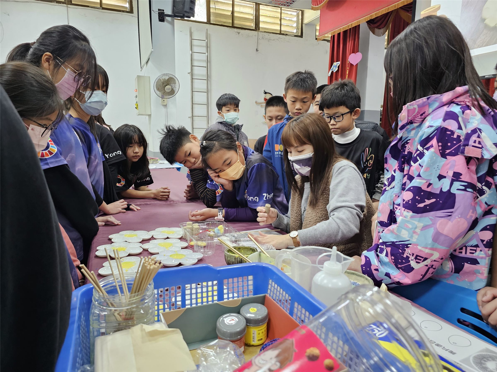
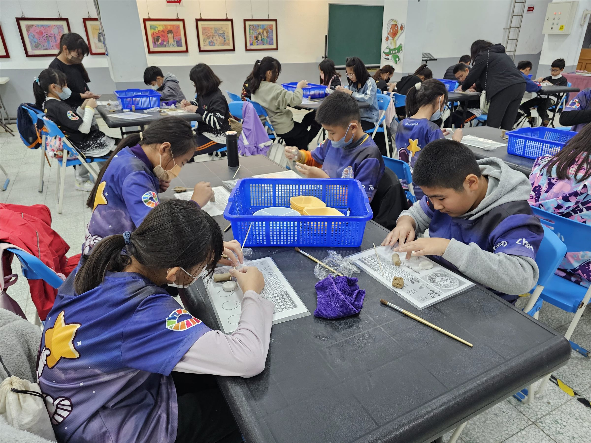
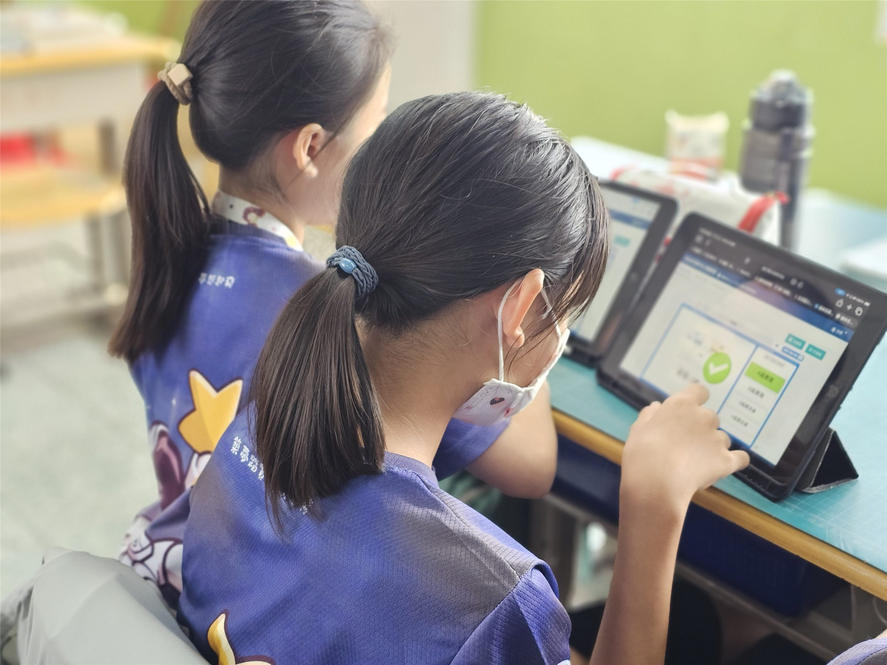
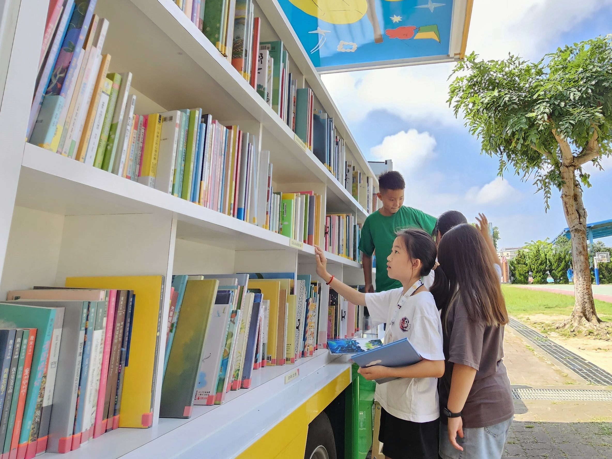

🏆 🏆 2026 全國科學探究競賽教師組 全國第三名 · 苗栗縣精進計畫教案 首獎
校本特色課程 × SEL × 永續發展
以植療心、以藝養韌的「嚐(常)、肉(樂)」之道
STREAM 議題融入永貞校本多肉植物課程之探究與社會情緒學習 (SEL)
📖 專題設計緣起與核心精神
面對 AI 科技與數位浪潮普及，數位原生代學童常陷入焦慮與低挫折容忍度。本課程立足永貞國小校本地景，串聯「多肉教室」、「校園孔子雕像」與「頭份蘆竹湳紅磚聚落」，開展『以植療心、以藝養韌』的跨域探究歷程，將植物抗逆生理學轉化為情緒調節的心理韌性。
🌍 核心素養與聯合國永續指標 (SDGs) 對應
SDG 4
優質教育
在探究實作與 AI 圖像協作中查核偏誤與幻覺，確立思辨主體性。
SDG 11
永續城鄉
踏訪蘆竹湳紅磚古厝，手捏陶盆調配排水介質，連結在地常民美學。
SDG 17
多元夥伴關係
校園市集義賣多肉盆栽捐助弱勢，並以全英語線上視訊向跨國學伴倡議。
🧩 核心模組與教學實踐架構
模組一：以植為鏡（SEL 自我覺察）
多肉抗逆生理學與情緒覺察
學生在永貞多肉教室微觀探究多肉植物景天酸代謝、儲水保水構造與氣孔調節機制，理解植物如何在乾旱逆境中繁衍，隱喻學童在挫折情境中覺察自我情緒，建立『心理韌性』。
模組二：以智辨真（SEL 自我管理）
走讀孔子雕像與思辨主體性
走讀校園孔子雕像，導讀《論語》『一簞食，一瓢飲，在陋巷，人不堪其憂，回也不改其樂』之知足安頓智慧；協作 AI 生成多肉意象圖，辨別並修正文化偏誤與 AI 幻覺。
模組三：以藝養韌（SEL 社會覺察）
紅磚常民美學與手作陶盆組盆
實地參訪蘆竹湳紅磚聚落汲取常民生活智慧；學生親手捏塑透氣陶盆，依科學比例調配顆粒排水介質，完成多肉微景觀組盆，在泥土與植物的觸感中陶冶定力。
模組四：以行傳愛（SEL 負責決策與人際）
校園市集義賣與跨國全英倡議
策辦校園『嚐肉常樂』綠色市集，全班自主決策將義賣所得全數捐贈給苗栗在地獨居老人與受飢兒童基金會；更透過線上視訊以全英語向海外姊妹校學伴進行永續倡議。
📸 教學現場紀實與成果照片（點擊放大檢視）
🔍 永貞國小多肉教室：多肉植物抗旱特化構造微觀觀察

🔍 手捏陶盆與多肉植物排水介質配比組盆實作

🔍 跨領域 STEAM 動手做：學生專注投入盆景藝術創作

🔍 分組探究合作學習與抗逆機制成果報告